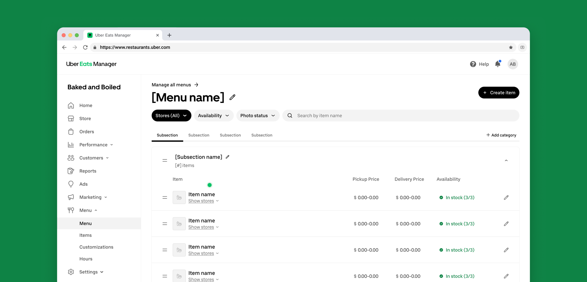
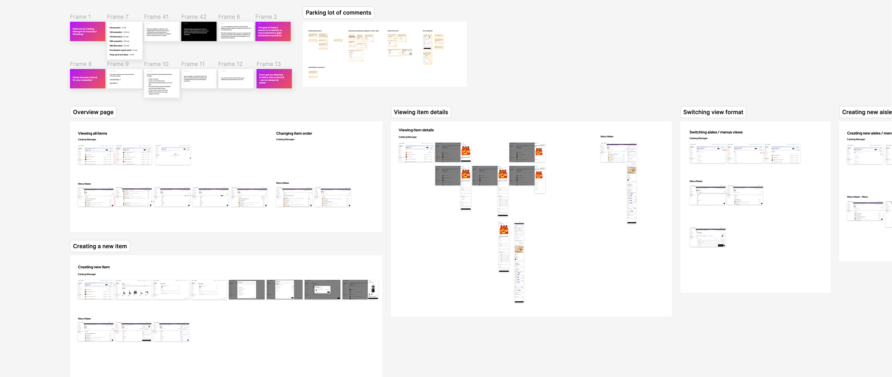

The new Catalog Manager empowers merchants of all sizes with scalable tools to effortlessly manage, customize, and optimize their product offerings on Uber Eats.

- Role
- Lead Product Designer
- Year
- 2024–2026
- Company
- Uber
Merchants across Uber Eats, from small restaurants to large enterprises, rely on the ability to easily manage their product offerings. The existing Catalog Manager within Uber Eats Manager did not adequately support the complexity of these needs. To create a more consistent, scalable, and user-friendly experience, the Catalog Manager required a complete redesign.
Problem
Separate experiences for each merchant type created operational complexity. Despite overlapping requirements, features were inconsistent and multi-location support was missing.
Solution
A flexible catalog management surface that adapts to different merchant types, surfacing the right tools for each business while enabling fast catalog setup and updates.
Impact
Test fase
Delving into the problem
Building a deep understanding of the product environment was essential at the start of the project. During the first weeks, the design team facilitated a series of workshops and collaborative sessions with cross-functional partners.
These sessions helped us evaluate the technical landscape, including backend infrastructure, system capabilities, and constraints, while also conducting competitor analysis and a UX audit of the existing Uber Eats experience.
 Evaluating the current experience and interviewing current users was essential to understand the gaps in the platform
Evaluating the current experience and interviewing current users was essential to understand the gaps in the platform

Connecting with the stakeholders in engaging jams was fundamental to find usability issues, common problems identified through the years, and inspiration for future featuresDesign principles
Intuitive
Tasks should be able to be finished quickly so the user can move to other high-priority tasks.
Reliable
Users shouldn't have to learn Uber speak to manage their catalogs. Terminology should be clear, following patterns from the industry.
Fast and efficient
Users should know exactly what will happen when they take an action, and Uber should notify the user of anything that may require their attention.
Scalable and adaptive
Uber should conform to the way users run their business and not the other way around. In case of expansion, Uber should be capable of handling multiple stores at the same time.